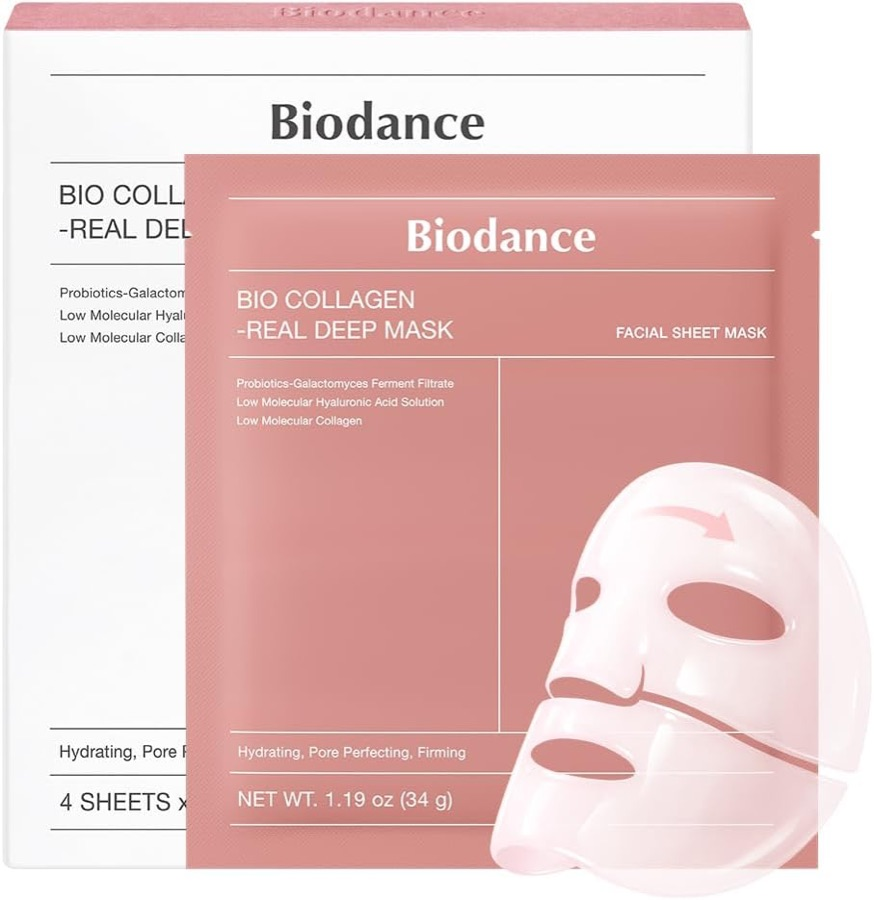

Biodance · Mascarillas
14,09 €10,45 €
Biodance Bio-Collagen Real Deep Mask
Mascarilla de hidrogel nocturna con colágeno · 4 unidades de 34 g
★★★★★4.6 · 46.338 reseñasPrecio orientativo a fecha 2026-10-06, exclusivo para clientes Prime. Sin Prime: 15,70 €. Consúltalo en Amazon.
- Seca
- Normal
- Mixta
- Deshidratada
Aviso de afiliados. Como Afiliados de Amazon, obtenemos ingresos por las compras que cumplen los requisitos. Esta web contiene enlaces de afiliado: si compras a través de ellos, podemos recibir una comisión sin coste adicional para ti. «Amazon» y el logotipo de Amazon son marcas de Amazon.com, Inc. o sus filiales.